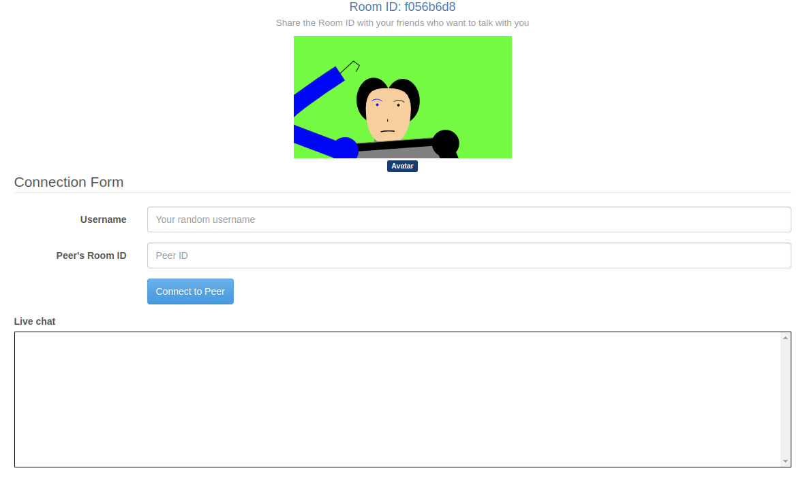
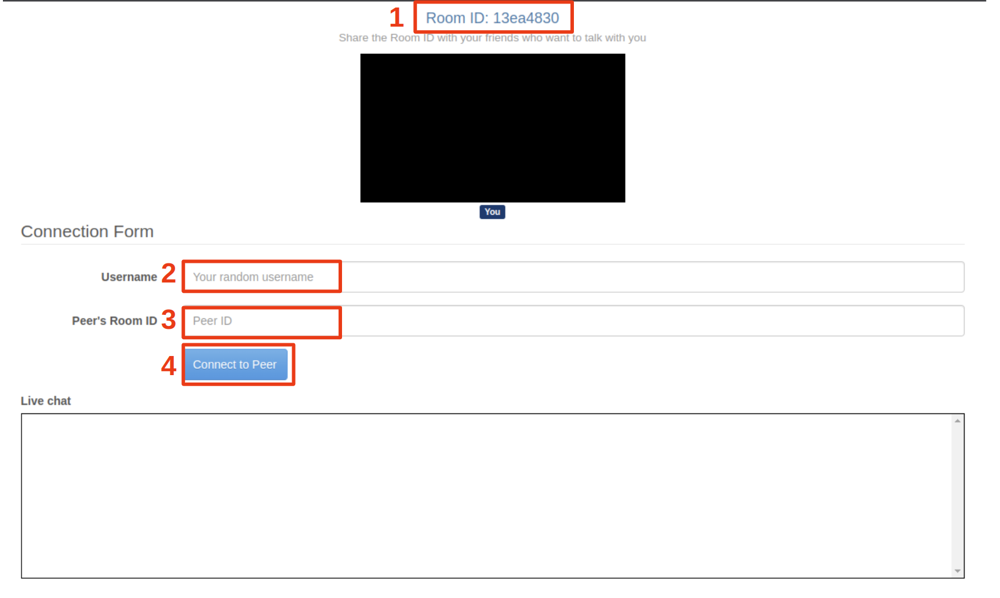
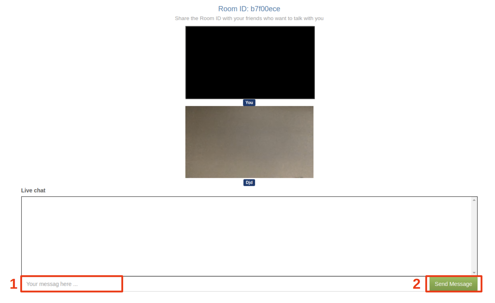
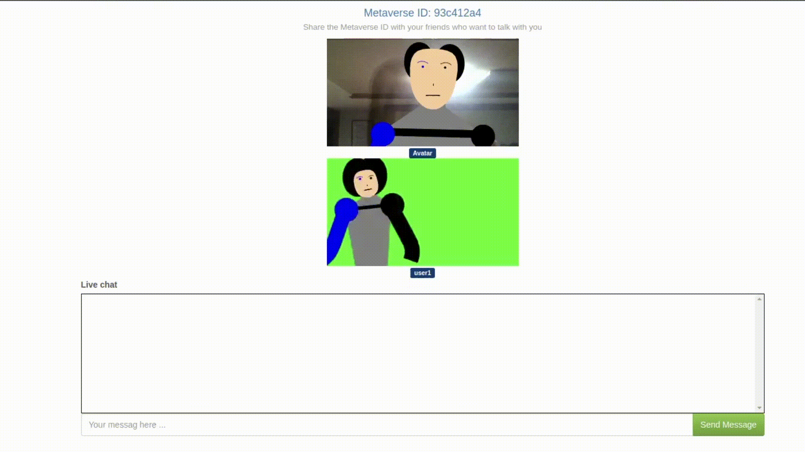
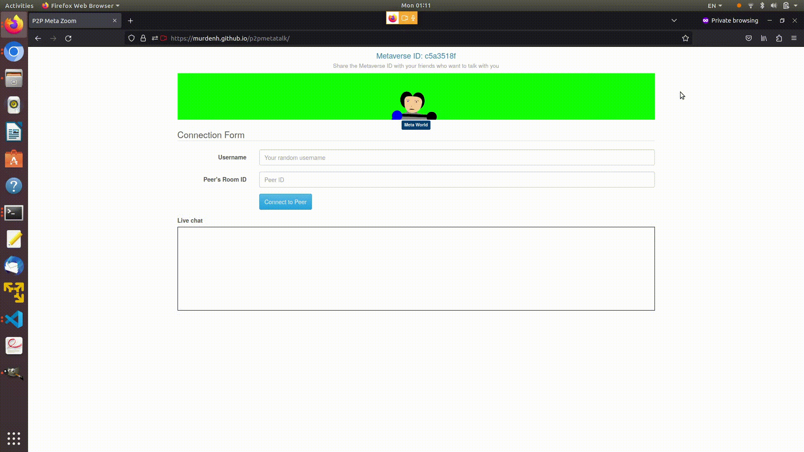

Features:
- Peer-to-Peer video chat application
- Client - Client direct video/text communication
- Serverless broker for communication initiation
- Avatar mode to transform face/body into a robot-like image
- Simple demonstration of Metaverse-like concept
- Teleport of a person to different digital space
Interface:


- First UI
- Check what is your friend’s room ID
- (If you want to talk with multiple friends, check the room ID of one of your friends)
- Type in your nickname
- Type in the room ID obtained from 1
- Click the button to connect
- Check what is your friend’s room ID
- Second UI
- After your friend accepts your connection, you can type in any text message
- Click the button to send the text message to your friend
Special function keys:
- Insert: Background on/off (Real world <-> Green background color)
- Delete: Avatar mode on/off
- Scroll-Lock: Metaverse mode on/off
(Real world -> Metaverse mode 1 -> Metaverse mode 2 -> Real world) - Curly brace keys {, }: Teleport controls in Metaverse mode

